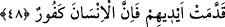

Tabiî ki burada şâir, hakîkat gülünü koklamaya işâret etmektedir. Bu da insânî rûhun
yalnız olarak şuhûdî varlık Necd’inde bulunmasıyla olur. Şâyet ruh bu bedenden ve
dünya âleminden kabir ve berzah âlemine intikal ederse -ki bu, hayat güneşinin zevâli
ve ömür akşamının bitmesiyle olacaktır- evet, işte artık o zaman, hakîkat gülünü
koklamaya imkân yoktur.
Şâir şöyle der:
Habersizler gibi fırsat eteğini elden bırakma,
Kol ve kanadın varken bu âlemden sefer et.
48. Eğer yüz çevirirlerse, bilesin ki biz seni onların üzerine bekçi göndermedik.
Sana düşen sadece duyurmaktır. Biz insana katımızdan bir rahmet tattırdığımız
zaman ona sevinir. Ama elleriyle yaptıkları yüzünden başlarına bir kötülük gelirse,
işte o zaman insan pek nankördür!
“Eğer” onlar Rabbin çağrısına icâbet etmez ve senin dâvet ettiğin şeyden “yüz
çevirirlerse, bilesin ki biz seni onların üzerine bekçi göndermedik. Sana düşen
sadece duyurmaktır.” Sen ise bunu yaptın. Artık yüz çevirmelerine aldırış etme. “Biz
insana katımızdan bir rahmet,” sağlık, zenginlik ve güven “tattırdığımız zaman ona
sevinir,” şımarır. “Ama elleriyle yaptıkları yüzünden başlarına bir kötülük,” bela,
hastalık, fakirlik ve korku “gelirse, işte o zaman insan pek nankördür,” nimeti unutur,
belâyı hatırlar.
Âyette kullanılan üslupla kelâm telvîn edilmiş, ifâdeye bir iltifat ve süsleme
getirilmiş, icâbetle emirden sonra insanlara hitaptan dönülerek söz Peygamberimiz
(s.a.)’e yöneltilmiştir. Yani “şâyet icâbet etmezler ve senin onları dâvet ettiğin
şeylerden yüz çevirirlerse biz seni onların üzerine murakıp, muhâsip ve onların
amellerine bekçi olarak göndermedik. Sen onları kötü iş yapmaktan koruyan bir
koruyucu da değilsin!” Burada Rasûlullah (s.a.)’e tesellî vardır.
et-Te’vilâtü’n-Necmiyye’de şöyle denilmektedir: Eğer onlar dünya ve âhirete
yönelerek Allah’tan yüz çevirir, Peygamber (s.a.)’in çağrısına icâbet etmezlerse, biz
seni onların üzerine, onları dünya ve âhirete iltifat etmekten koruyucu bir bekçi olarak
göndermedik. Çünkü bu koruma görevi, senin değil, benim şânımdır. Elbette gören,
gözeten, koruyan benim. Senin, risâletin tebliği dışında bir görevin yoktur. Muvaffakiyet
vermek yahut hüsrâna uğratmak konusunda onlara nasıl muâmele edeceğimizi biz biliriz.
İmam Gazâli Şerhu’l-Esmâ’da şöyle demiştir: Kullardan “hafîz” olan; uzuvlarını,